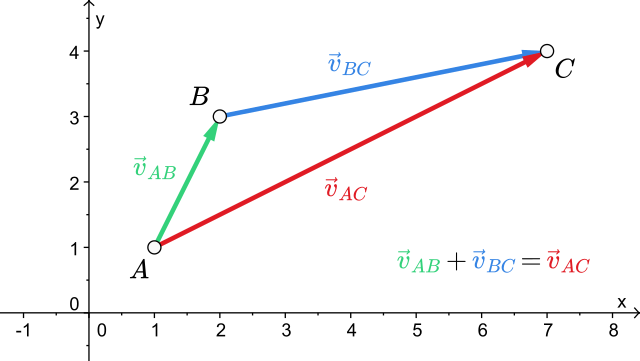
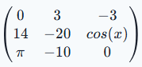
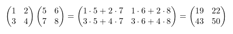
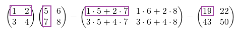
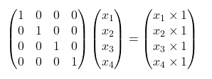
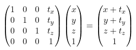
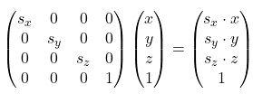
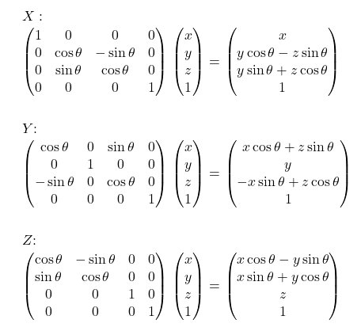

Vectors
Vectors will have 2 purposes in our program
- Direction - A vector (2;3) will mean that if we move in that direction we will go 2 to the right and 3 up
- Position - A vector (2;3) will mean that we are at the 2D position x=2 and y=3
Basic vector calculations
Just like a standard number we can add, subtract, multiply and divide vector with another vector or a number
OpenGL GLSL language has all of these operations build-in but to use them in our program we need to have a library like glm or make our own
Adding two vectors combines them. Using two directional vectors and adding them together results in a directional vector thats the result of moving using the first vector and then the second vector. In the example below we are doing (2;1) + (-1;1) resulting in (1;2)

Subtracting them is similar but it subtracts the coordinates of the second vector from the first one. Subtracting two positional vectors results in a directional vector where u - v = w and w is the direction from v to u
glm::vec3 playerPos = glm::vec3(3, 2, 3);
glm::vec3 goalPos = glm::vec3(1, 5, 2);
glm::vec3 playerToGoalDir = goalPos - playerPos;vec3 playerPos = vec3(3, 2, 3);
vec3 goalPos = vec3(1, 5, 2);
vec3 playerToGoalDir = goalPos - playerPos;Multiplying a vector with a number makes the vector bigger. This can be used to increase the force or length of our movement. The calculation looks like (2;1) * 2 = (4;2). Division works the same but divides instead of multiplying
Vector specific math
Vectors have some specific math components such as calculating their length, dot product or normalization. There are more operations available but for now we are just going to need these basic ones
Length
The length operation is an unary term meaning we only need to supply one vector to calculate it
Length tells us how far is a vector “reaching”. For example we can take a vector and get how far would we travel if we went in that direction
It is calculated using the pythagorean theorem as a vector forms a right triangle with the X and Y (and Y) axis
glm::vec3 u = glm::vec3(3, 2, 3);
float vectorLength = glm::length(u);vec3 u = vec3(3, 2, 3);
float vectorLength = length(u);If we have two positional vectors and want to know how far are they we can combine subtraction and length together
glm::vec3 playerPos = glm::vec3(3, 2, 3);
glm::vec3 goalPos = glm::vec3(1, 5, 2);
float distance = glm::length(goalPos - playerPos);vec3 playerPos = vec3(3, 2, 3);
vec3 goalPos = vec3(1, 5, 2);
float distance = length(goalPos - playerPos);Length squared
Length uses the pythagorean theorem which requires calculating the square root. This is computationally expensive compared to other math functions. When we want to compare which vectors are further and closer we don’t really care about the result of length but the comparison instead. Vector math libraries usually provide length2 which is a lot faster by dropping the square root from computation thus giving us the length squared
If our math library does not provide length2 we can create our own like
float length2(vec3 v){
// x^2 + y^2 + z^2
// instead of
// sqrt(x^2 + y^2 + z^2)
return pow(v.x, 2) + pow(v.y, 2) + pow(v.z, 2);
}Normalizing
Normalization is an unary term where we take our vector and limit each axis to an interval between -1 and 1. The vector keeps its direction but any movement we apply using it will result in a movement of length 1
glm::vec3 u = glm::vec3(3, 2, 3);
glm::vec3 normalU = glm::normalize(u);vec3 u = vec3(3, 2, 3);
vec3 normalU = normalize(u);Multiplying two vectors
Multiplying two vectors together is more complicated as there are two different ways
Cross product
This form of multiplication is mathematically defined only for 3D (and technically 7D) vectors
It’s a binary operation that results in a vector that is normalized and perpendicular to the both vectors supplied
glm::vec3 u = glm::vec3(3, 2, 3);
glm::vec3 v = glm::vec3(1, 5, 2);
glm::vec3 w = glm::cross(u, v);vec3 u = vec3(3, 2, 3);
vec3 v = vec3(1, 5, 2);
vec3 w = cross(u, v);Dot product / Scalar product
The name dot product or scalar product are interchangeable between each other and mean the same thing
It’s a binary operation that results in a single scalar number. If the vectors are perpendicular the result is 0. If the vectors are parallel the result is a product of their magnitudes
It can be used to measure how much vectors point to each other or the angle between them
This is a more complex form of multiplication and we will not really need it in our program
glm::vec3 u = glm::vec3(3, 2, 3);
glm::vec3 v = glm::vec3(1, 5, 2);
glm::vec3 w = glm::dot(u, v);vec3 u = vec3(3, 2, 3);
vec3 v = vec3(1, 5, 2);
vec3 w = dot(u, v);Dimensions
When talking about 1D, 2D, 3D,… vectors we mean what dimension the vector will be in
The window uses only X,Y coordinates meaning its only 2D. We can only go left/right and up/down on a screen
X,Y,Z positioning coordinates in a game are a 3D vector. If we make a 2D game instead it can only use 2D vectors for positioning
Matrices
Matrices can be imagined as a 2D array of values. It is similar to standard 2D arrays like float array[3][3]

In the example above we can see a 3x3 matrix where the first value tells us how many rows we have and the second value how many columns
Math
Addition and subtraction works as we would expect where adding two matrices (lets call them A and B) computes the result matrix C as C[0][0] = A[0][0] + B[0][0], C[0][1] = A[0][1] + B[0][1],.. and so on
Multiplying
Multiplying two matrices is more complex. In the image below you can see two example 2x2 matrices being multiplied

To make the explanation a bit simpler there is a highlighted version where you can see how 1 cell in the matrix is computed

To multiply a matrix we basically take the row from the first matrix and column from the second matrix and multiply each single cell from both matrices together before adding them
To multiply a matrix with a vector we essentially pretend as if the vector was a matrix with the width of 1

Transforming a vector
In OpenGL our vertices are defined as a vector. If there only was a way to take those vectors and be able to move them based on magical matrices that define their position, rotation and scale right? Well that is exactly what we are going to do! Using some clever matrices we can transform our vertices as if they were rotated, moved or otherwise altered around the (0,0,0) point
The matrix above is called an identity matrix, as you can see it does not do anything to our original vector. We can imagine the identity matrix as a starting point which we can later use to combine and “glue” together other matrices
Positioning
For positioning we create a matrix like shown below where t is a 3D vector that represents the position of an object in 3D space

Scaling
For scaling we create a matrix like shown below where s is a 3D vector that represents the scale of an object in all 3 axis

Rotating
Rotation is a bit more difficult. Unless we start using quaternions we can only rotate in one specific axis. Below are the 3 matrices which allow us to make that rotation for X (pitch), Y (yaw) and Z (roll)

The symbol θ (theta) represents the angle of our object in that specific rotation axis
Combining matrices
Rotating only in one axis is however very limiting and what if we want to also position our object as well as rotate it? Thats what combining the matrices is for
Let’s say that we have a transform matrix T and two rotation matrices for two axis called Rx and Ry. All we need to do is to calculate our final transform matrix called F (F for final) as F = T * Ry * Rx. Then to transform a vector v we just do F * v to get our transformed position
Since order of multiplication matters to prevent unwanted behavior we should do our operations as
- Scale
- Rotate
- Move
Important note is that the order of multiplication is read from right to left so in the equation we should put scale furthest to the right and positioning matrix furthest to the left with rotation matrices in the middle
When working in OpenGL we usually make the transform matrix on the CPU with C++ and then send it to a vertex shader that then transforms all vertices using the matrix we provided. If we do not want any transformation from happening we can just send an identity matrix as it does not change the resulting vector
In GLM
Most of the math we discussed is done for us with GLM. GLM also has a special rotation matrix where we can set our axis to any arbitrary vector not just X, Y or Z but we can still rotate around one axis at a time without combining matrices
As the order of multiplication is read from reverse we also need to apply our matrices in reverse. In code this results in us first setting the movement matrix then rotation and then scale
// create an identity matrix
glm::mat4 transform = glm::mat4(1.0f);
// move our object to (3;5;2)
transform = glm::translate(transform, glm::vec3(3.0f, 5.0f, 2.0f));
// rotate our object on the X axis by 45 degrees
transform = glm::rotate(transform, glm::radians(45.0f), glm::vec3(1.0f, 0.0f, 0.0f));
// rotate our object on the Z axis by 45 degrees
transform = glm::rotate(transform, glm::radians(45.0f), glm::vec3(0.0f, 0.0f, 1.0f));
// scale our object to be twice as big
transform = glm::scale(transform, glm::vec3(2.0f, 2.0f, 2.0f));In the following example we have a 3D position (casted into 4D) that represents a corner of our triangle. the new transformed triangle corner position will be moved/rotated/scaled based on our origin point (0,0,0)
// triangle corner at (0.5; -0.5; 0.0)
glm::vec4 triangleCorner = glm::vec4(0.5f, -0.5f, 0.0f, 1.0f);
glm::vec4 triangleCornerTransformed = transform * triangleCorner;We will rarely need to move a vector with a transform outside of GLSL but it can be done. Transforming a vector inside GLSL is just as simple as we just send the transform to our vertex shader that then calculates a new position for all of our vertices